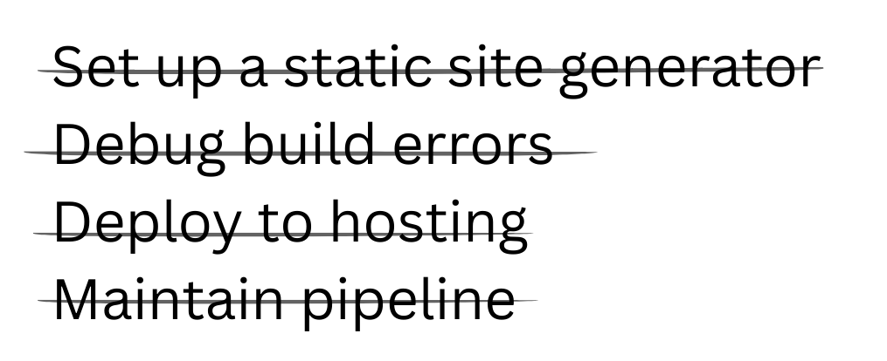

Publish your docs.
Skip the
stack.
Turn a folder of Markdown into a live docs site, in seconds. Connect GitHub, use the CLI, or publish from Obsidian.

Turn a folder of Markdown into a live docs site, in seconds. Connect GitHub, use the CLI, or publish from Obsidian.

Just upload a folder.

Your folders become sections. Your files become pages. URLs follow the same structure. No separate navigation config.


Built-in search
Press ⌘K and find what you need instantly.


Push to GitHub. Run the CLI. Sync from Obsidian. Refresh the page. It's live. No rebuild ritual. No “deployment in progress” anxiety.

Keep your docs where they already live. Your repo stays the source of truth. Changes auto-sync. No migration to a proprietary editor.
Make your docs public. Or keep them internal.
No proprietary format. No locked editor. No migration trap.
Use the workflow you already have.
Start with plain Markdown. Add richer blocks when they help. Your docs stay readable as files — not trapped in a proprietary editor.
No plugin hunt. No special editor. Just Markdown files with a few extra powers.
Plain Markdown works out of the box. Use extensions only when they help.
Real documentation sites published with Flowershow.
No. Upload your Markdown files or connect a GitHub repository. Navigation is generated from your folders and your site is live in seconds. There’s no theme setup or build pipeline to manage.
Push to GitHub. Or sync via CLI or Obsidian. Refresh the page — your changes are there. No manual deployment step.
Yes. Your repository stays the source of truth. Flowershow publishes directly from it and auto-syncs changes. There’s no proprietary editor to migrate to.
Yes. You can publish public documentation or keep it internal. The workflow is the same either way.
Your documentation is just Markdown files. You can take them anywhere — another host, another tool, or your own infrastructure.
No. If you can organize files into folders, you can publish documentation. You don’t need to know what a static site generator is.